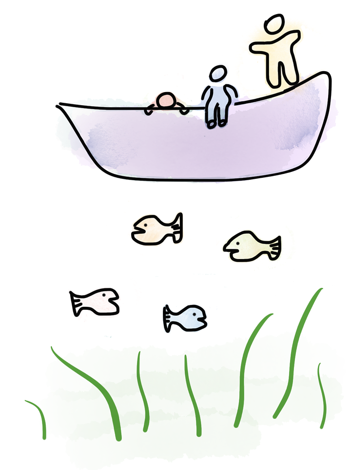

“You are taking a walk through your favourite park in the city. As the sun shines above the eaves of the whistling trees, you make your way through the winding dirt path, enjoying the fresh air. Hearing a little whistle in the distance, you exit the leafy canopy to find yourself in front of an expansive blue lake. In the shining turquoise water, you relist in the setting sun. As the last light of day disappears, so does the dream. What was once a beautiful lake has grown to become an impure body polluted with cigarette butts on the shore and plastic bottles lapping through the waves. What was once a beautiful park has become… trash.”
In 2016, the total number of large litter items in the city of Toronto increased by 14% within a 2 year span.

Sadly this is problem is not a unique situation. With every community cleanup, parks around the world face the never-ending recursion of carelessly dropped garbage.
Trash Trekker wants to change that.
Using visual recognition powered by ML Kit and a suite of Google products including Firebase, Maps JS API and Maps SDK Android, garbage will no longer have a place to hide. With aerial drones and crowd-sourced data, garbage will be located, categorized and entered into a database with the snap of a photo. Access the data on one of our three platforms including a web app and two Android apps tailored for different users. Participate in our crowd-sourced data or use it yourself, and together we will create a beautiful city.